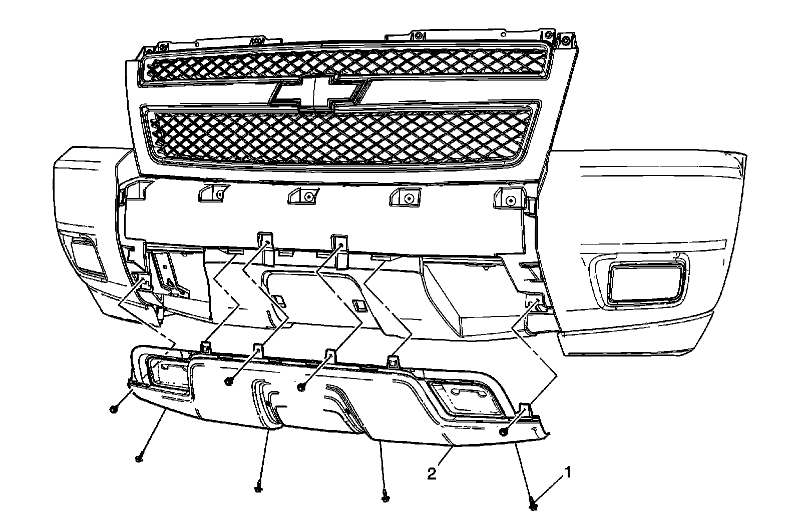

Operation CHARM
: Car repair manuals for everyone.
Home
>>
Cadillac
>>
2007
>>
Escalade ESV AWD V8-6.2L
>>
Repair and Diagnosis
>>
Body and Frame
>>
Bumper
>>
Front Bumper
>>
Front Bumper Cover / Fascia
>>
Service and Repair
>>
Front Bumper Fascia Skid Plate (Z71)
Front Bumper Fascia Skid Plate (Z71)
Front
Bumper
Fascia
Skid Plate
(Z71)
